一站式浏览器扩展，覆盖 GPA 查询、智能自动登录、智能选课分析、 LMS 课件保存、自动评教与部分网站显示增强。
七大核心模块，覆盖南大学习生活全场景
本地 OCR 模型与云端 AI 双轨并行识别验证码，一键填充账号密码。本地模型离线可用，云端 AI 精度更高。
AI 红黑榜标注课程评价，自动检测时间冲突，置顶收藏感兴趣课程，按校区筛选。
点击插件图标一键跳转至交换生网站查看 GPA，无需手动导航多级菜单。
全自动评教：锁定"很好"选项，随机生成合理评语，自动处理弹窗，全程自动完成。
智汇南雍 LMS 增强：突破下载限制，提供更方便的途径将课件保存到电脑上。
增强了一些网站的显示效果：优化作业界面（待完成/已完成/已截止）与课件界面的展示。
一键直达校园重要网站、资料库等，省去查找的困难。
更多功能正在逐渐加入中…
点击图片，看看 NJU-Hub 加持下的无比便利
每次登录统一认证系统都要手动输入验证码？NJU-Hub 支持本地 OCR 模型与云端 AI 双轨并行识别验证码，离线也能用，全程零手动操作。
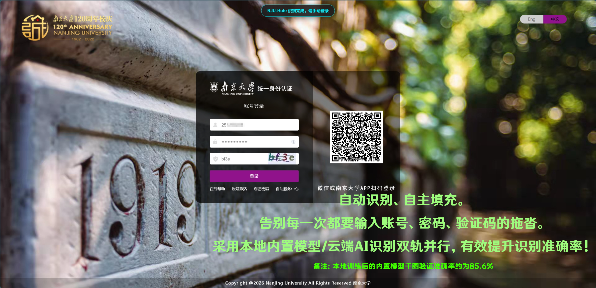
使用后选课界面杂乱无章？NJU-Hub 基于 AI 分析课程评价，自动标注红榜黑榜，检测时间冲突，置顶收藏感兴趣的课程。
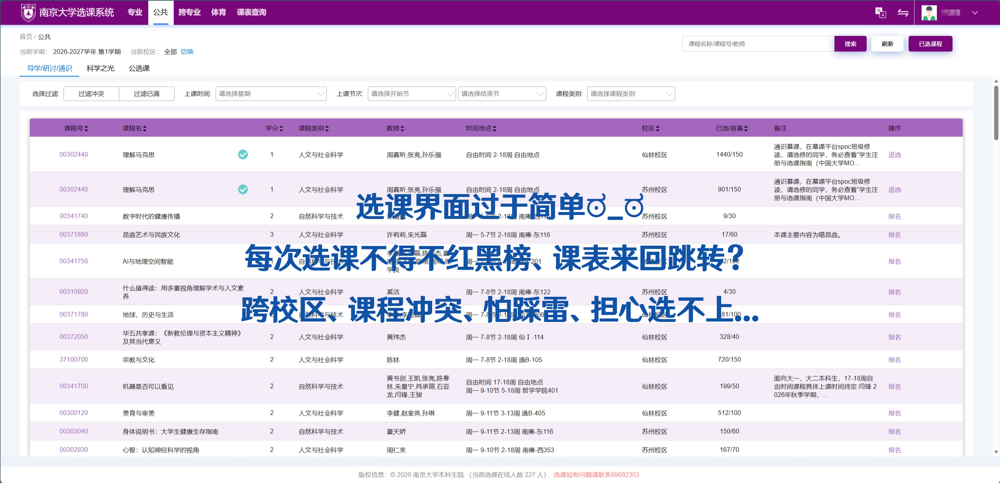
使用前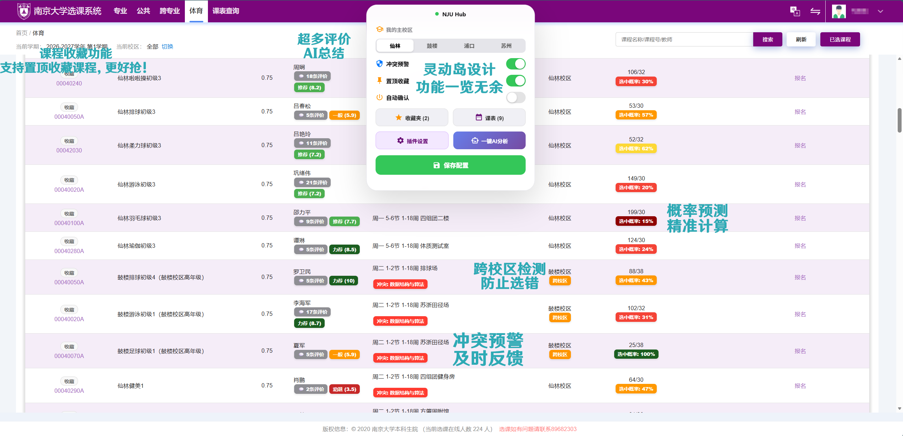
使用后查 GPA 要点好几层菜单？NJU-Hub 一键跳转至交换生网站 GPA 页面，省去繁琐导航。
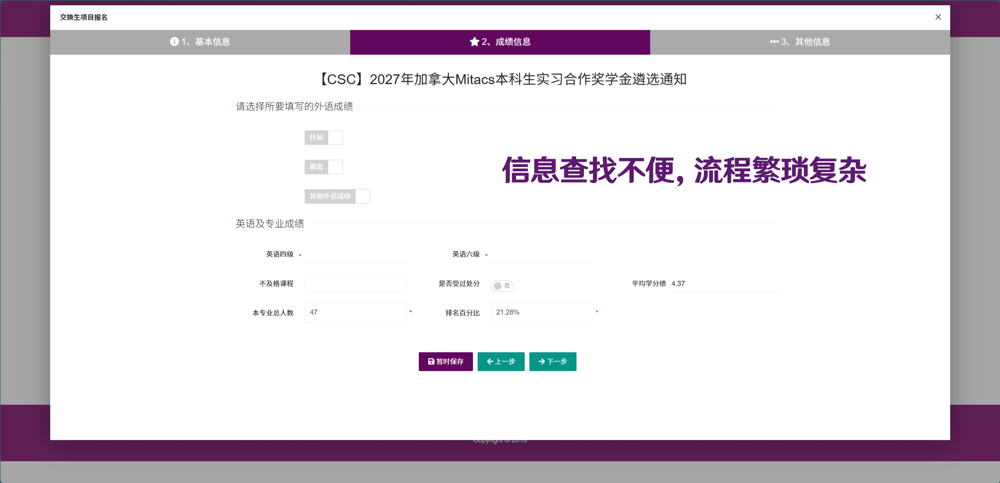
使用前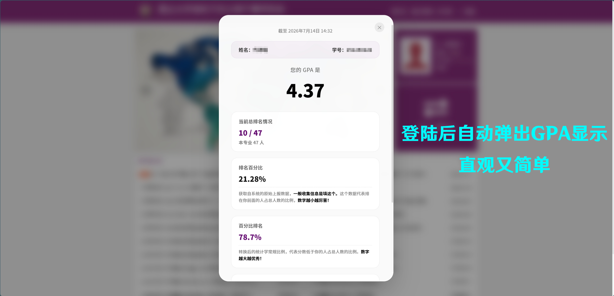
使用后期末评教要逐门课逐项手动点选？NJU-Hub 全自动完成：锁定"很好"选项，随机生成合理评语，自动处理弹窗。
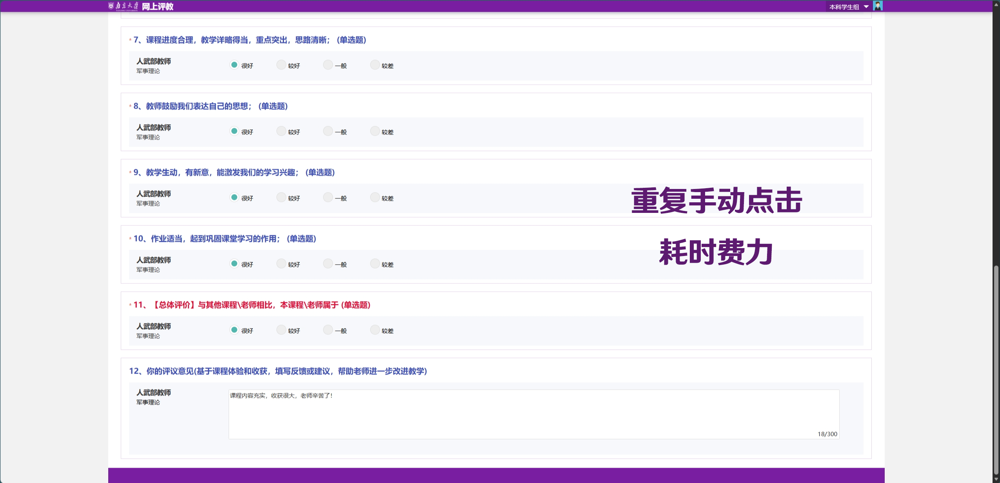
使用前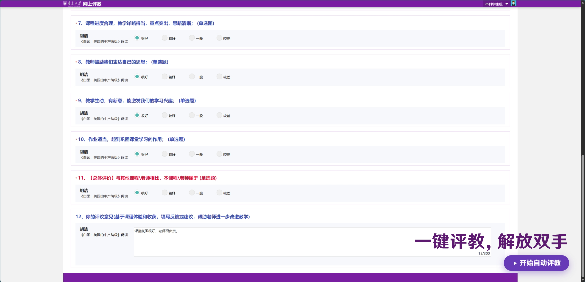
使用后智汇南雍 LMS 课件下载受限？NJU-Hub 突破限制，提供更方便的途径将课件保存到电脑上。
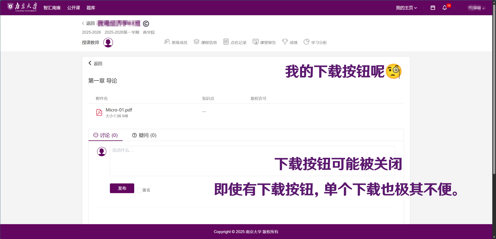
使用前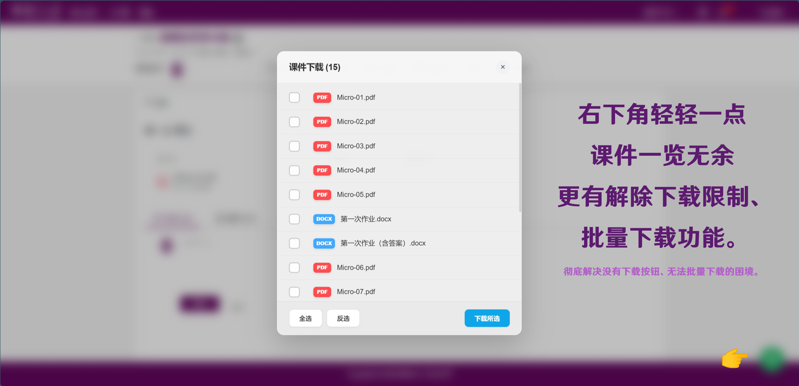
使用后部分课程平台界面杂乱？NJU-Hub 显示增强功能可以大幅提升学习效率，优化作业界面与课件界面的展示。
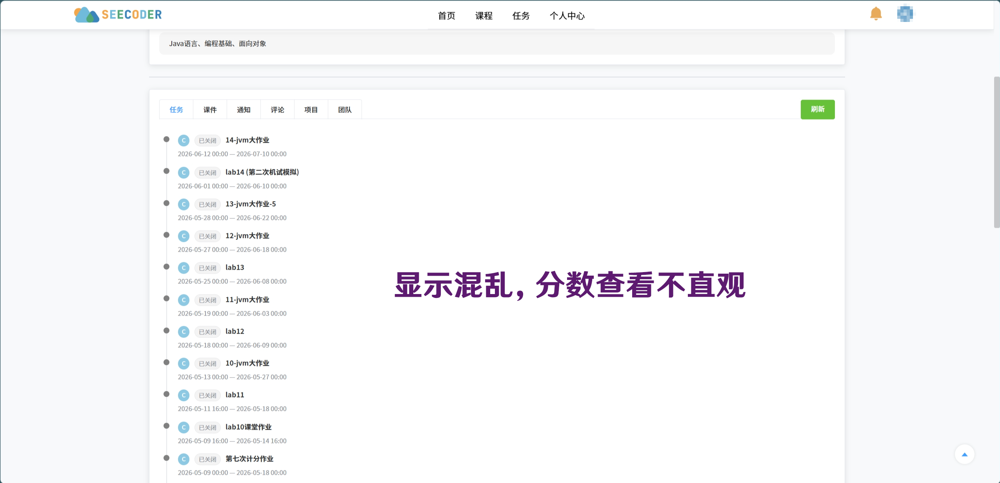
使用前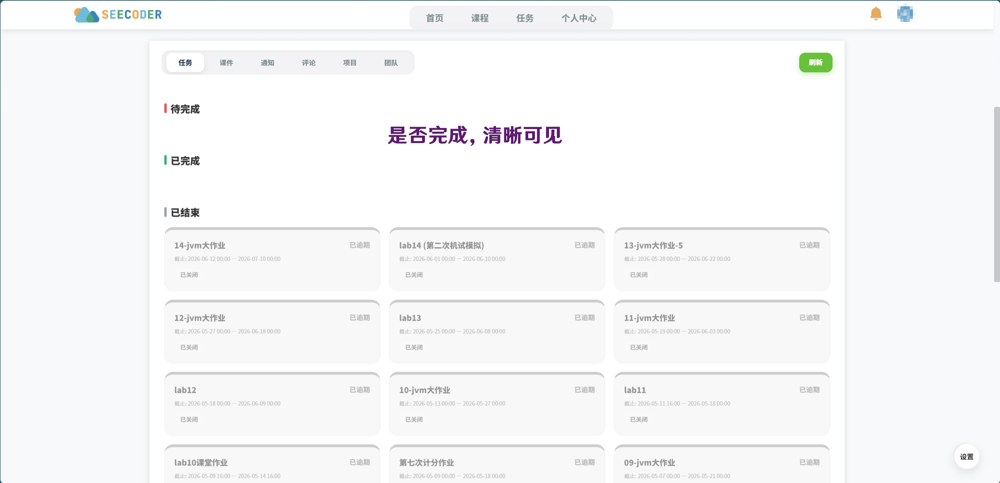
使用后扫码或点击链接获取最新更新、使用帮助与插件讨论
群号：766861419
加入QQ群已上架 Chrome 应用商店，点击按钮一键安装，无需手动加载扩展。
前往 Chrome 商店安装仅需大约一分钟，即刻体验完整功能
在 Edge 地址栏输入 edge://extensions/，开启左下角"开发人员模式"。
点击"加载已解压的扩展程序"，选择解压后的 NJU-Hub 文件夹，固定到工具栏即可。